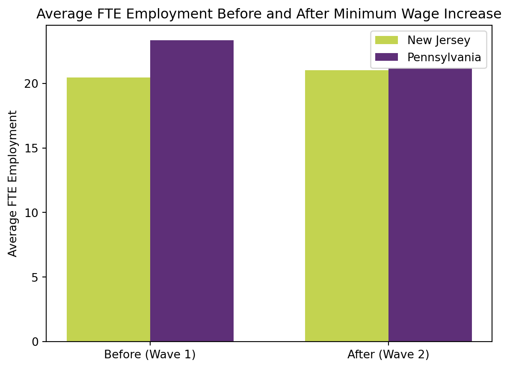
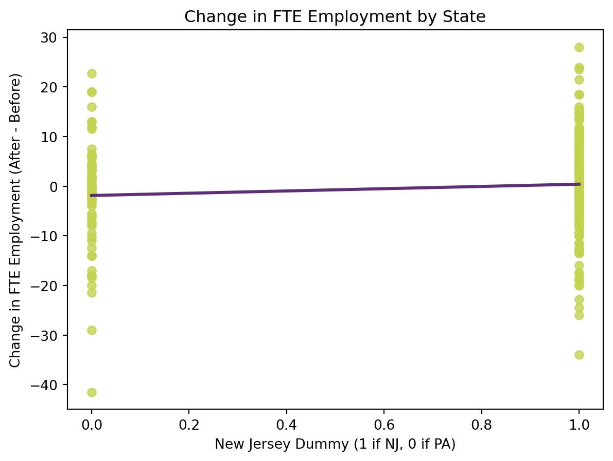

# FTE definitions
df['FTE'] = df['EMPFT'] + 0.5 * df['EMPPT'] + df['NMGRS']
df['FTE2'] = df['EMPFT2'] + 0.5 * df['EMPPT2'] + df['NMGRS2']Replication of David Card and Alan B. Krueger (1994)
Minimum Wage and Employment: A Case Study of the Fast Food Industry in New Jersey and Pennsylvania
Introduction
In 1992, New Jersey raised its minum wage from $4.25 to $5.05 per hour, while Pennsylvania kept its minimum wage at $4.25. David Card and Alan B. Krueger conducted a study to analyze the impact of this change on employment in the fast food industry in both states. They collected data from fast food restaurants in New Jersey and Pennsylvania before and after the minimum wage increase.
The main question they sought to answer was whether the increase in the minimum wage led to a decrease in employment in New Jersey compared to Pennsylvania. They surveyed over 400 fast food restaurants in both states, collecting data on employment levels before and after the wage increase. The study used difference-in-differences (DiD) methodology to compare the changes in employment levels in New Jersey and Pennsylvania, controlling for other factors that might affect employment.
Note
What is Difference-in-Differences (DiD)?
DiD is a statistical technique used in econometrics to estimate the causal effect of a treatment or intervention by comparing the changes in outcomes over time between a treatment group and a control group.
Main Analysis
The main analysis of the study involved comparing the changes in employment levels in New Jersey and Pennsylvania before and after the minimum wage increase. They found that the increase in the minimum wage in New Jersey did not lead to a decrease in employment compared to Pennsylvania.
In fact, they observed a slight increase in employment in New Jersey relative to Pennsylvania after the wage increase. This finding challenged the traditional economic theory that suggests that an increase in the minimum wage would lead to a decrease in employment.
Note
An increase in wages can lead to a decrease in employment, as employers may reduce the number of workers they hire or cut hours to offset the higher labor costs. As labor becomes more expensive, companies may hire fewer workers to maintain budget constraints. Employers might also cut hours instead of laying off workers, leading to reduced income for employees.
This is a highly debated topic, and quite an interesting one. The Congressional Budget Office has some interesting research on this that you an also find here!
Recreating Key Statistics
Table 2 — Means and Standard Deviations of Key Variables
Here, we recreate some key statistics that Card and Krueger reported in their paper, using the data they collected from the fast food restaurants. We will calculate the average full-time equivalent (FTE) employment, the percentage of full-time employees, and the distribution of starting wages in both New Jersey and Pennsylvania before and after the minimum wage increase.
Some key definitions that we will need to calculate the statistics for are defined below:
FTE (full-time equivalent) employment is calculated as the number of full-time employees plus half the number of part-time employees plus the number of managers. This gives us a standardized measure of employment that accounts for both full-time and part-time workers.
Next, we have full time share, which is calculated as the percentage of full-time employees out of the total FTE employment. This gives us an idea of the composition of the workforce in terms of full-time versus part-time employees.
# full-time share
df['PCT_FT'] = 100 * df['EMPFT'] / df['FTE']
df['PCT_FT2'] = 100 * df['EMPFT2'] / df['FTE2']Lastly, we have the price of a full meal, which is calculated as the sum of the prices of a soda, fries, and an entree. This gives us an idea of the cost of a typical meal at these fast food restaurants.
# full meal price
df['FULLMEAL'] = df['PSODA'] + df['PFRY'] + df['PENTREE']
df['FULLMEAL2'] = df['PSODA2'] + df['PFRY2'] + df['PENTREE2']| NJ | PA | |
|---|---|---|
| Variable | ||
| Distribution of Store Types (%) | ||
| Burger King | 41.1 | 44.3 |
| KFC | 20.5 | 15.2 |
| Roy Rogers | 24.8 | 21.5 |
| Wendy's | 13.6 | 19.0 |
| Company-owned | 34.1 | 35.4 |
| Means in Wave 1 | ||
| FTE employment | 20.44 | 23.33 |
| (0.51) | (1.35) | |
| Percentage full-time employees | 32.8 | 35.0 |
| Starting wage | 4.61 | 4.63 |
| (0.02) | (0.04) | |
| Wage = $4.25 (%) | 30.5 | 32.9 |
| Price of full meal | 3.35 | 3.04 |
| (0.04) | (0.07) | |
| Hours open (weekday) | 14.4 | 14.5 |
| (0.2) | (0.3) | |
| Recruiting bonus | 23.6 | 29.1 |
| Means in Wave 2 | ||
| FTE employment | 21.03 | 21.17 |
| (0.52) | (0.94) | |
| Percentage full-time employees | 35.9 | 30.4 |
| Starting wage | 5.08 | 4.62 |
| (0.01) | (0.04) | |
| Wage = $4.25 (%) | 0.0 | 25.3 |
| Wage = $5.05 (%) | 85.5 | 1.3 |
| Price of full meal | 3.41 | 3.03 |
| (0.04) | (0.07) | |
| Hours open (weekday) | 14.4 | 14.7 |
| (0.2) | (0.3) | |
| Recruiting bonus | 20.3 | 23.4 |
Table 2 presents the means for several key variables in both New Jersey and Pennsylvania before and after the minimum wage increase. Standard errors are reported in parentheses.
First, we see the distribution of stores by chain and ownership status. Burger King, Roy Rogers, and Wendy’s have similar distributions. KFC does differ and is highlighted in the original paper as being smaller, with more limited hours, and often more expensive prices for full meals.
In Wave 1, average employment was 23.3 FTE workers per store in Pennsylvania, and 20.44 in New Jersey. We observe very similar starting wages across the two states. We observe an increase in the average starting wage in New Jersey after the minimum wage increase.
Table 3 - Average Employment per Store Before and After Minimum Wage Increase in New Jersey and Pennsylvania
Next, we can recreate Table 3 from the Card and Krueger paper, which shows the average employment per store before and after the minimum wage increase in New Jersey and Pennsylvania. This table will allow us to directly compare the changes in employment levels in the two states and see if there was a significant difference in the impact of the minimum wage increase on employment.
| 0 | 1 | 2 | |
|---|---|---|---|
| Variable | Pennsylvania | New Jersey | Difference (NJ - PA) |
| Average FTE Employment (Before) | 23.331169 | 20.439408 | -2.891761 |
| Average FTE Employment (After) | 21.165584 | 21.027429 | -0.138155 |
| Change in Average FTE Employment (After minus Before) | -2.165584 | 0.588021 | 2.753606 |
As we can see, from Table 3, the average FTE employment per store in Pennsylvania decreased slightly from 23.3 to 21.7 after the minimum wage increase, while in New Jersey, it increased from 20.44 to 21.03. The difference in the change in average FTE employment between New Jersey and Pennsylvania is positive, suggesting that the minimum wage increase in New Jersey may have had a positive effect on employment levels compared to Pennsylvania.
Table 4 - Reduced Form Models for Change in Employment
Finally, we can attempt to replicate the reduced form models that Card and Krueger used to analyze the change in employment levels in New Jersey and Pennsylvania. This involves running regression analyses to estimate the effect of the minimum wage increase on employment while controlling for other factors that might influence employment levels. We will be recreating column i of Table 4, which includes the change in FTE employment as the dependent variable and a dummy variable for New Jersey as the key independent variable.
OLS Regression Results
==============================================================================
Dep. Variable: FTE_change R-squared: 0.010
Model: OLS Adj. R-squared: 0.008
Method: Least Squares F-statistic: 3.658
Date: Wed, 22 Apr 2026 Prob (F-statistic): 0.0566
Time: 13:54:00 Log-Likelihood: -1257.0
No. Observations: 351 AIC: 2518.
Df Residuals: 349 BIC: 2526.
Df Model: 1
Covariance Type: nonrobust
==============================================================================
coef std err t P>|t| [0.025 0.975]
------------------------------------------------------------------------------
const -1.8788 1.073 -1.751 0.081 -3.989 0.231
NJ_dummy 2.2769 1.190 1.913 0.057 -0.064 4.618
==============================================================================
Omnibus: 38.948 Durbin-Watson: 2.136
Prob(Omnibus): 0.000 Jarque-Bera (JB): 102.254
Skew: -0.519 Prob(JB): 6.25e-23
Kurtosis: 5.432 Cond. No. 4.41
==============================================================================
Notes:
[1] Standard Errors assume that the covariance matrix of the errors is correctly specified.Using the public-use public.dat file and the standard FTE definition, my Table 4 regression sample contains 351 stores after restricting to observations with nonmissing employment and starting wages in both waves, as per their Table 4 footnote. This is slightly smaller than the 357-store sample reported in Card and Krueger, which suggests that the original published regressions used additional cleaning or coding choices not fully recoverable from the public archive alone.
However, the coefficient on the New Jersey dummy variable is positive, indicating that there was a positive change in FTE employment in New Jersey compared to Pennsylvania after the minimum wage increase. This finding is consistent with Card and Krueger’s conclusion that the minimum wage increase did not lead to a decrease in employment in New Jersey relative to Pennsylvania. This aligns with the coefficient that Card and Krueger report in their paper, which is 2.33. I am able to recover the same standard of the coefficient in my regression.
The overall conclusion remains the same: there is evidence of a positive effect of the minimum wage increase on employment levels in New Jersey compared to Pennsylvania.
Visualizing their Results
While all these numbers are helpful in technical terms, visualizations can often make it easier to understand the data.
Comparing Average FTE Employment Before and After Minimum Wage Increase in New Jersey and Pennsylvania
Here, we create a bar chart comparing the average FTE employment in New Jersey and Pennsylvania before and after the minimum wage increase. This would allow us to visually see the change in employment levels in New Jersey compared to Pennsylvania.

Plotting the Regression Line from the Reduced Form Model
We can also plot our regression line from the reduced form model to visualize the relationship between the change in FTE employment and the New Jersey dummy variable. This would help us see if there is a clear difference in employment changes between New Jersey and Pennsylvania.

As we can see, there is a slight increase in FTE employment in New Jersey compared to Pennsylvania after the minimum wage increase, which is consistent with the findings of Card and Krueger. The regression line also shows a positive relationship between being in New Jersey and the change in FTE employment, suggesting that the minimum wage increase may have had a positive effect on employment levels in New Jersey.
Key Takeaways from the Replication
- The replication of Card and Krueger’s study confirms their main finding that the increase in the minimum wage in New Jersey did not lead to a decrease in employment compared to Pennsylvania. In fact, there was a slight increase in employment in New Jersey relative to Pennsylvania after the wage increase.
- The average FTE employment per store in New Jersey increased from 20.44 to 21.03 after the minimum wage increase, while in Pennsylvania, it decreased from 23.3 to 21.7. This suggests that the minimum wage increase may have had a positive effect on employment levels in New Jersey compared to Pennsylvania.
- The regression analysis also supports the conclusion that there was a positive change in FTE employment in New Jersey compared to Pennsylvania after the minimum wage increase, with a positive coefficient on the New Jersey dummy variable.